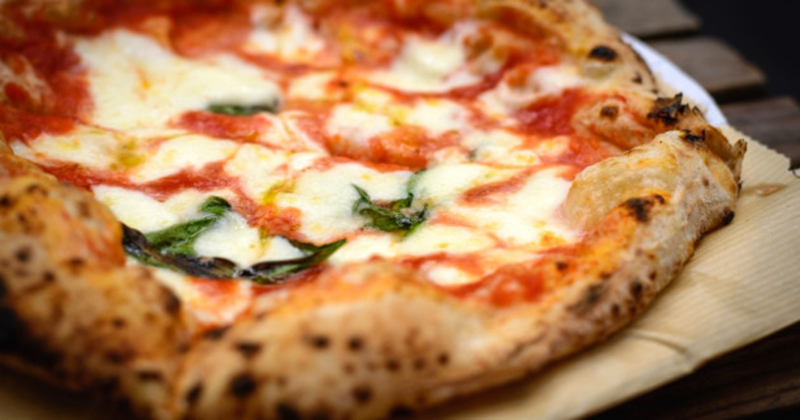

↓
Pizza Italiana
Buenas, aqui le enseñaremos a como hacer una pizza clasica italiana, a continuación les mostraremos un video con sus pasos, disfruten!

Ingredientes
- 500g Harina tipo 00
- 350 cL de agua
- 10g de levadura (una cucharada)
- 20g de sal
- Un poco de aceite de oliva
contactos